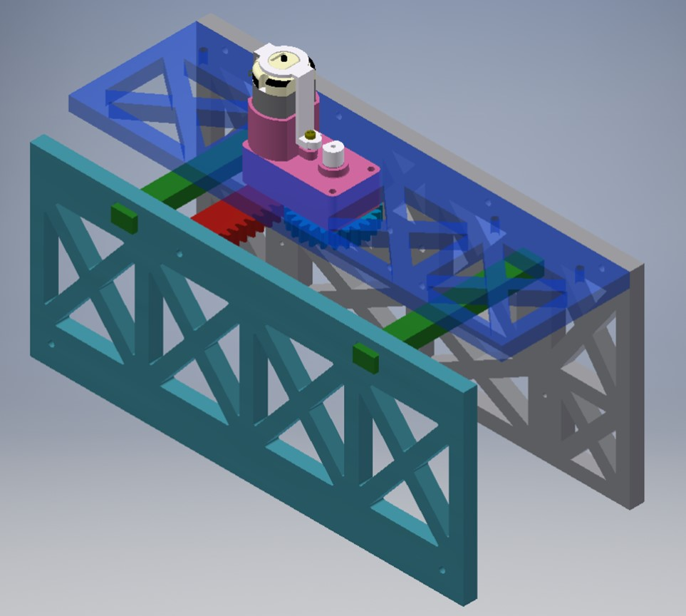

The objective of this project was to create a robot that would be able to transport 3D-printed, differently weighted medals to podiums with varying heights for a class-wide robot competition. To achieve this, the robot must be created with limited materials that were provided, including sheet metal, acrylic, 3D-printed materials, and various other low-cost materials. My team, consisting of Jocelyne Perdomo, Allysa Penamora, Emily Moreno, and myself, has created a robot that utilized multiple rack-and-pinion mechanisms for the clamping and lifting components of the robots. We also evaluated various wheel drives to see which ones were the most effective for our purposes.
I was personally responsible for designing and building the clamping mechanism. The design started with pieces of foamcore cut with the lasercutter to test the capabilities of the acrylic rack-and-pinion mechanism coupled with the motor. The design transitioned into using acrylic for the framework, along with springs on the side and rubber tracks on the inside of the clamp for more grip strength to be able to grab the medals.
Although we did not come close to winning in the class competition, we had a lot of fun building the robot. This class was my stepping stone into learning machine shop and rapid prototyping skills!